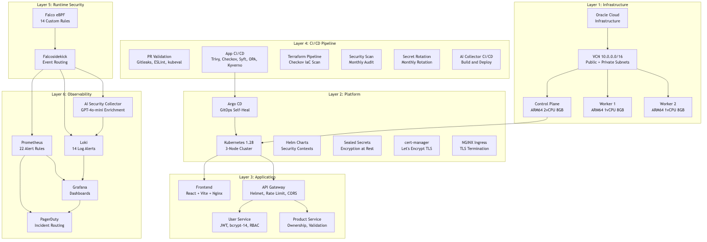

A reproducible, open-source framework that operationalises NIST Zero Trust Architecture as automated controls across the full delivery lifecycle of a Kubernetes microservices application — evaluated against NIST SP 800-207 and the MITRE ATT&CK for Containers matrix.
Cloud-native application development has transformed how organisations build and operate software systems, but the rapid adoption of Kubernetes-based microservices has outpaced traditional approaches for verifying infrastructure, application, and runtime security controls. Perimeter-based security models, which rely on implicit trust within network boundaries, are incompatible with the dynamic and distributed nature of containerised environments. This work designs, implements, and evaluates a Zero-Trust DevSecOps framework for a Kubernetes-based microservices application, FreshBonds, using the Design Science Research Methodology. The framework integrates infrastructure as code, GitOps-driven deployment, dual-engine policy-as-code enforcement, container vulnerability scanning, automated secret lifecycle management, eBPF-based runtime threat detection, and AI-assisted incident enrichment — deployed on a production-grade three-node Kubernetes cluster on Oracle Cloud Infrastructure.
The novelty is the integrated artefact, not any individual tool. Trivy, Kyverno, Falco, and Argo CD are each well studied in isolation; the contribution here is connecting them into a single, evidence-generating continuous-compliance pipeline and evaluating it as a whole against Zero Trust tenets and MITRE ATT&CK coverage.
A six-layer, defence-in-depth design — infrastructure, Kubernetes platform, application, CI/CD and GitOps, runtime security, and observability — so that no single missed control causes a complete failure.

Full methodology, tables, and discussion are in the thesis and paper; headline results:
| Metric | Result |
|---|---|
| NIST SP 800-207 Zero Trust tenets satisfied | 7 / 7 |
| Policy and runtime rules enforced (Kyverno + OPA + Falco) | 39 |
| Security tools integrated across CI/CD | 10, across 6 pipelines |
| MITRE ATT&CK for Containers techniques covered | 13, across 8 / 12 tactics |
| CI/CD gates tested against injected critical CVEs / policy violations | Blocked in all tested cases |
| Measured runtime detection latency (Falco / eBPF) | < 30 seconds |
FreshBonds — a demonstration farm-to-table microservices application used as the subject system:
Security & compliance controls across the delivery lifecycle:
Architecture, security, workflow, and deployment guides live in /docs of the repository.
A non-blocking FastAPI service that enriches Falco runtime events with Azure OpenAI — see /research.
Terraform, Helm charts, Argo CD manifests, and six GitHub Actions pipelines are all in the repository root — see the main README for setup.
If you use this work, please cite the thesis:
Released as an open research project so the framework and findings can be freely reused.